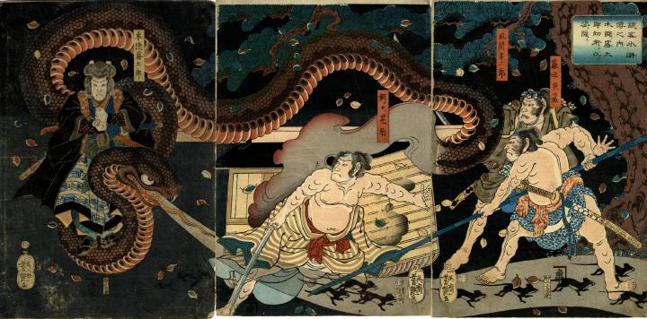

籠の中から煙とともに出現した大蛇。それに跨る霧太郎は印を結んでいる。大蛇の口からは大量の鼠が吐き出されている。
著作者：一英斎芳艶／出典：親書誌：U426_nichibunken_0250：鏡客水滸伝之内木隠ノ霧太郎幼術ヲ以テ姿ヲ隠ス；キョキャクスイコデンノウチコガクレノキリタロウヨウジュツヲモッテスガタヲカクス／日付：2011／資源識別子：U426_nichibunken_0250_0001_0000
Copyright (c)2010- International Research Center for Japanese Studies, Kyoto, Japan. All rights reserved.